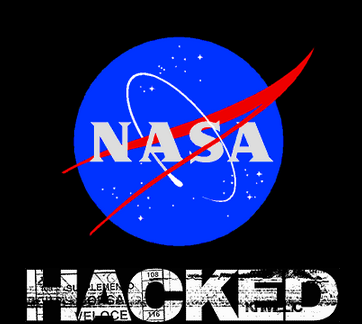

Hacking NASA
For hackers, NASA is still priority
-- by hackers

Hacking into NASA network, the worlds most successful Space Station and Space research Organization is Dream of Every Hacker. Being such a big Organization & having very very confidential data, NASA must have the most secure network and Unbreakable Firewalls. Despite having all of it, still the reason that a human has made it, it's vulnerable.
Attack
In late 1999, when the hackers community just started to evolve, A brilliant Hacker Jonathan James, who was just 15 year old kid actually hacked NASA :)
The United States Department of Defense (DOD) discovered many intrusion attacks on School Systems as well as DOD itself including NASA. This all was executed by a Young Man of just 15 year old.
In Between June 29 1999 to 30 1999 Jonathan was able to break into NASA security and got access to 13 systems (Computers) from where he stole software and information of worth 1.7 Million Dollars, This Ultimately caused NASA to shut down their system for 21 days long. The sole reason behind the hack to know how does NASA work and Does Aliens exists ( Which all of us wanna know ) 😉
The Software which he stole ‘C0mrade‘ was responsible for elements of Survival within the International Space Station (ISS). This Software allowed to control temperature && humidity within the ISS, as well as other important issues of Physical Environment. NASA decided to shut down the Systems and rewrite the source code instead of using ‘C0mrade‘ This hack was such a shame full issue for the world, that despite being underage Jonathan was sent to prison. On Jan 26 2000-, DOD agents, NASA were ordered to enter Jonathan’s house and apprehend the Hacker
He was pleaded guilty to two count of 'Juvenile Delinquency', Since he was a minor it was not possible to apply any other types of charges. If he would be an adult, it was estimate that he might had to face 10 years of his life in Prison. He was given 6 months of Home arrest warrant, ban on access to Computers for recreational use, parol until he turned 18 and ofcourse a letter of apology to both NASA and DOD
What happens to such legendary hacker?
He did suicide!! Ya, On 17 Jan 2007, the largest attack to date in United States was released. Many multinational companies were felt victim. The attack robbed personal and Credit Card Information of Millions of Customers. The hacker behind this attack was ALbert Gonzalez, during his investigation Jonathan James name appeared. Jonathan was trapped as he did not had link with the attack. But he was depressed due to Investigation and all the media response. On 18 May 2008, Jonathan was 25, he was found gunshot on head in his house in shower. It was clear suicide along with suicide note. The note contain the reason of Suicide and PayPal for his parents and Girlfriend.
Robert James, father of Jonathan James, recalls Jonathan as a passionate geek who has enjoyed using family computers since he was 6 years old. When he was in high school, he managed to delete Windows from his home computer to install Linux[Linux_is_Life = True]. Robert also mentions that along with his wife tried several times to put rules to Jonathan on the use of the computer at home since a moment arrived in which he did not sleep by being glued to the monitor.
© hackkeencyber